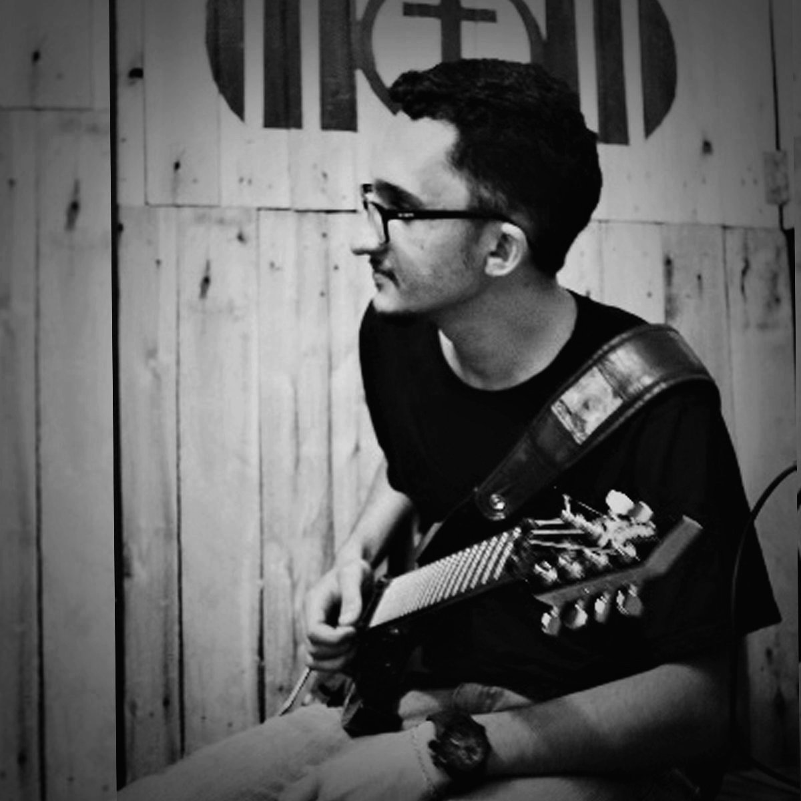

Produção de Trilhas Sonoras
Composição sob medida para jogos eletrônicos, curtas, longas e séries. Criação de temas marcantes, orquestrações ricas e texturas sintéticas alinhadas à narrativa visual.
Produção de trilhas sonoras originais, mixagem e masterização de alta fidelidade técnica desenvolvidas especialmente para games, cinema e universos audiovisuais.
Processo direto com o produtor Jhonatan Gomes Ramos, garantindo alinhamento criativo e pontualidade.
Composição sob medida para jogos eletrônicos, curtas, longas e séries. Criação de temas marcantes, orquestrações ricas e texturas sintéticas alinhadas à narrativa visual.
Equilíbrio preciso de frequências, profundidade e dinâmica. Tratamento de vozes, instrumentos e efeitos para dar clareza, impacto e espaço exato a cada elemento na mix.
Etapa final que confere o polimento comercial, presença e consistência de volume (LUFS) exigidos para plataformas de streaming (Spotify, Apple Music) e distribuição física.
Entendemos a realidade de orçamentos independentes. Na Nocthyr Audio, oferecemos suporte completo com pacotes flexíveis por minuto de composição, entrega de stems separados para áudio adaptativo e integração perfeita com seu projeto.

A Nocthyr Audio é o estúdio de produção autoral criado pelo músico e produtor Jhonatan Gomes Ramos. Com foco total na entrega estética e técnica, o projeto nasceu da dedicação em transformar visões criativas de cineastas e desenvolvedores em assinaturas sonoras vivas.
Aqui cada trabalho é conduzido de forma individualizada, priorizando a profundidade narrativa, sempre valorizando o contexto do seu projeto.
Preencha o formulário para enviar os detalhes do seu briefing diretamente para o e-mail oficial da Nocthyr Audio ou entre em contato direto pelo WhatsApp.

Dark RPG Soundtrack • Track 01